Префектура Исикава · Канадзава · музеи и архитектура
Музеи Канадзавы: стеклянный круг SANAA, ремёсла в армейских зданиях и тишина Танигути
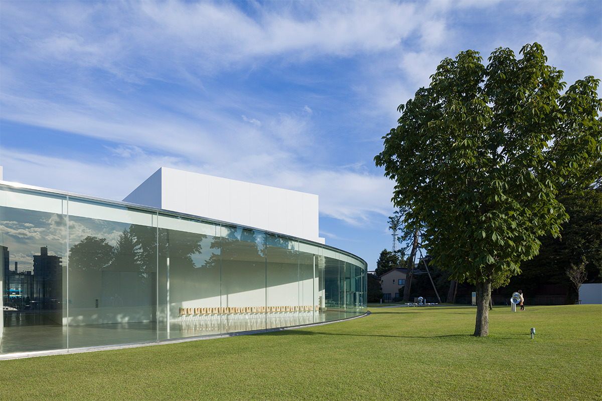
Канадзава славится садом Кэнроку-эн и старыми кварталами, но в город стоит ехать и ради архитектуры. Вокруг сада и в соседних кварталах стоят четыре музея, которые строили так, чтобы здание само становилось частью впечатления.
Маршрут
Культурный лес вокруг Кэнроку-эн
В центре Канадзавы лежит Кэнроку-эн, один из трёх самых знаменитых садов Японии. Вокруг него на небольшом пространстве собраны замковый парк, префектурный музей искусств, музеи в старых краснокирпичных зданиях, Музей современного искусства XXI века, Национальный музей ремёсел и Музей Д. Т. Судзуки. Город называет этот район «Культурный лес вокруг Кэнроку-эн»: здесь рядом стоят постройки от эпохи княжества Кага до наших дней.
Рядом лежат оживлённый квартал Коримбо, рынок Оми-тё и самурайские дома. Чуть дальше, у храмового квартала Тэрамати, стоит четвёртый музей этого маршрута, посвящённый отцу и сыну архитекторам Танигути.
SANAA
Музей современного искусства XXI века: музей как городской парк
Музей современного искусства XXI века стоит в районе Хиросака, в самом центре города. В его собрании в основном работы, созданные после 1980 года, и вещи художников, связанных с Канадзавой. Круглое здание в стеклянной оболочке спроектировало бюро SANAA: архитекторы Кадзуё Сэдзима и Рюэ Нисидзава.
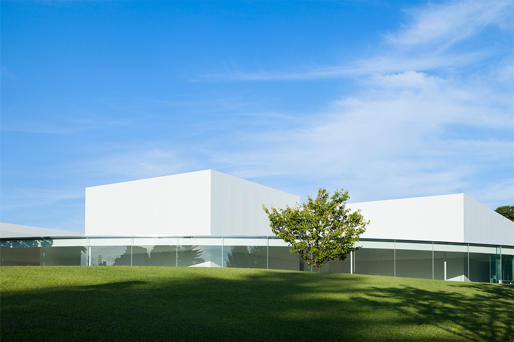
Музей открывали с двумя целями: создавать новую культуру и вернуть жизнь в центр города. Он задуман как городская площадь, где учатся, играют, творят и общаются. Заодно это лаборатория: здесь проверяют, что местная культура, прежде всего ремёсла, которые развивались ещё при княжестве Кага, может дать миру XXI века.
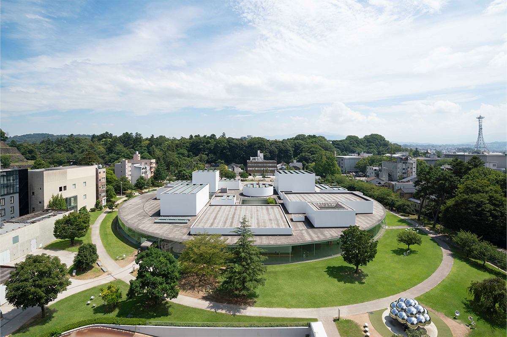
Раньше здесь стояли школа и детский сад. Рядом мэрия, напротив здание префектуры, а наискосок Кэнроку-эн. Поэтому музей задумали как парк, через который удобно пройти любому и где может случиться неожиданная встреча.
Участок с трёх сторон окружён улицами, и SANAA сделали здание круглым и стеклянным, без фасада и задней стороны, чтобы войти можно было с любой стороны. Верхний свет и световые дворики делают внутренние пространства светлыми. Музей открыт и по вечерам, в нём есть магазины и ресторан: архитекторы думали о том, чтобы зайти сюда было просто, интересно и удобно.
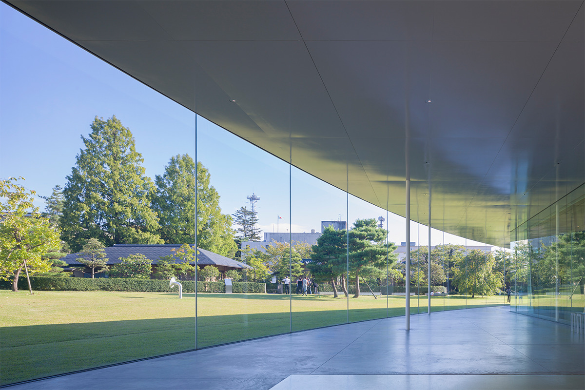
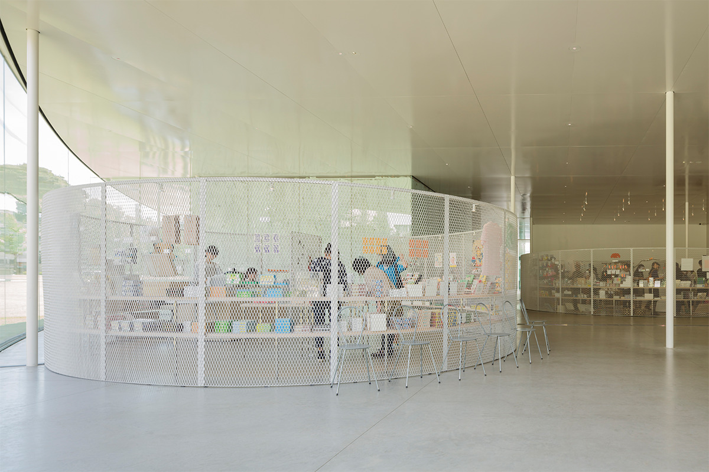
Платная зона выставок занимает середину круга, а бесплатная общественная зона идёт по его краю. Залы, кубические белые или круглые, стоят отдельно друг от друга. В каждом свой мир одной работы, и обходить их можно в любом порядке.
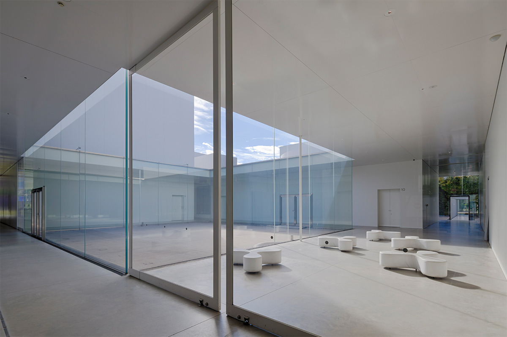
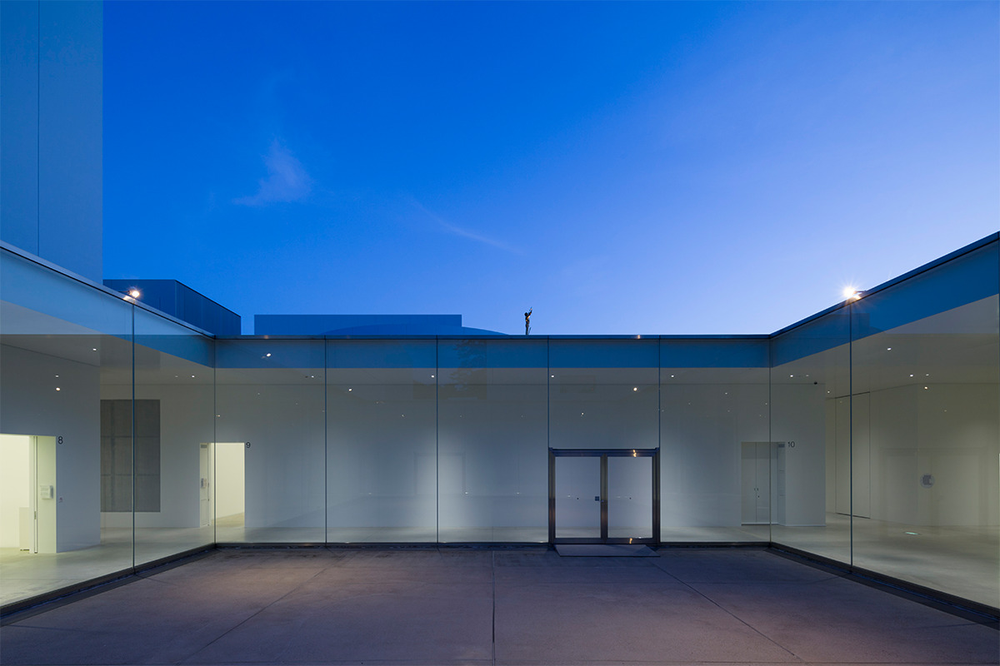
Между залами, кафе и библиотекой нет порогов и перегородок, и взгляд проходит здание насквозь от края до края. Даже в глубине здания по светлому коридору сразу понимаешь, где находишься.
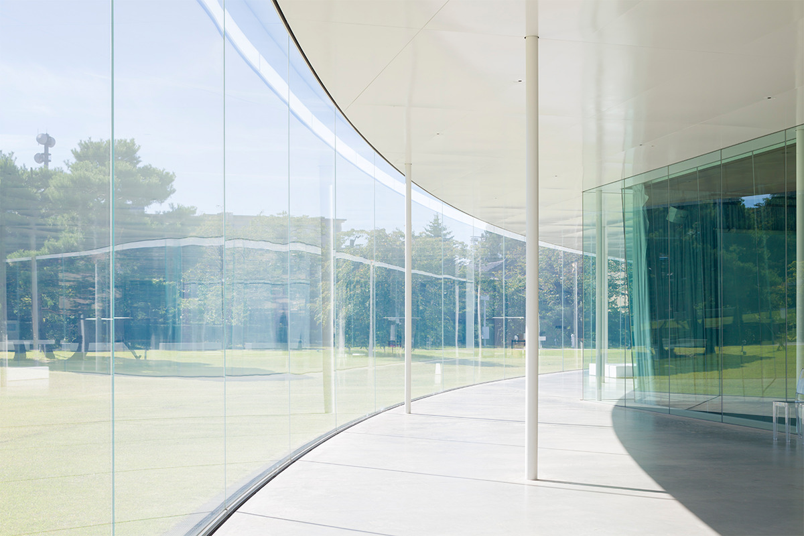
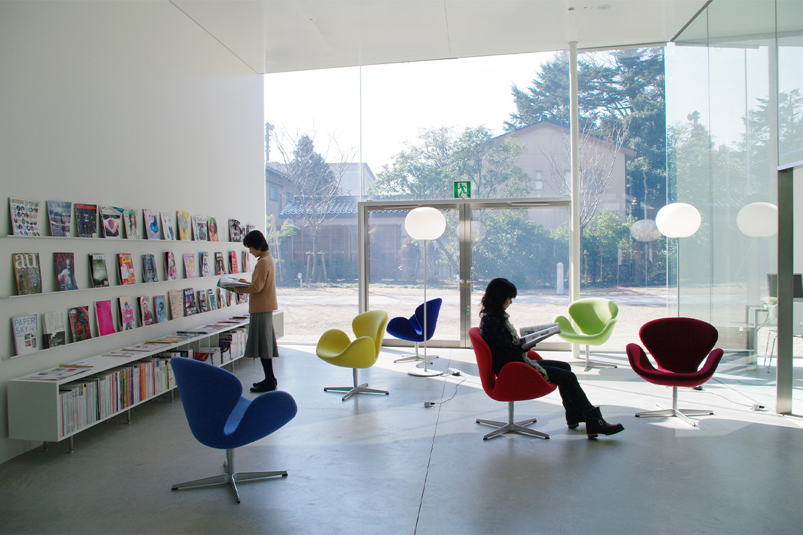
Кроме временных выставок на разные темы и показов собрания, в здании и вокруг него стоят постоянные работы.
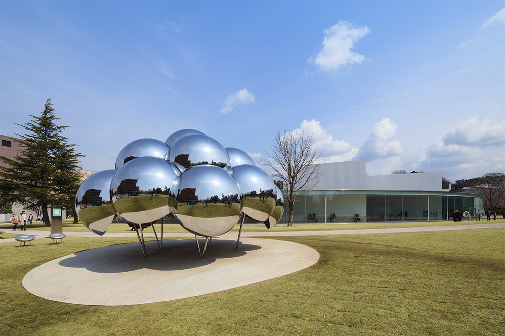
В ресторане Fusion21 готовят из местных продуктов, в том числе из старинных овощей Кага, на обед бывает шведский стол, хороши и десерты. Пообедать в стеклянном зале особенно приятно.
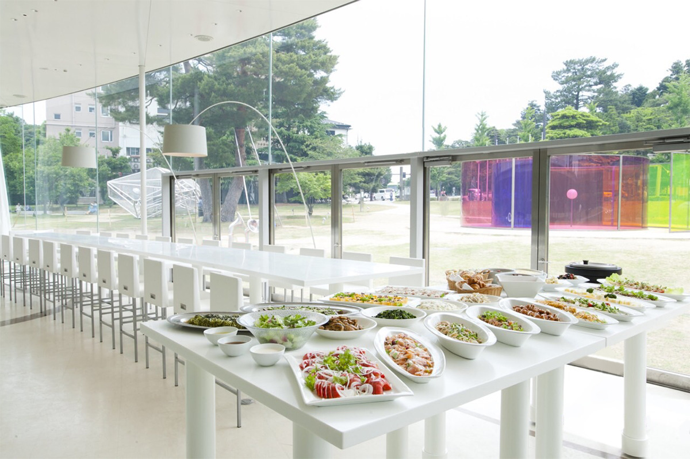
На территории музея есть чайные домики, связанные с княжеством Кага: Сёто-ан и Сан'у-тэй с беседкой ожидания. Обычно их можно осмотреть бесплатно, а ещё их сдают для чайных церемоний, поэтических вечеров, церемоний благовоний и читательских встреч.
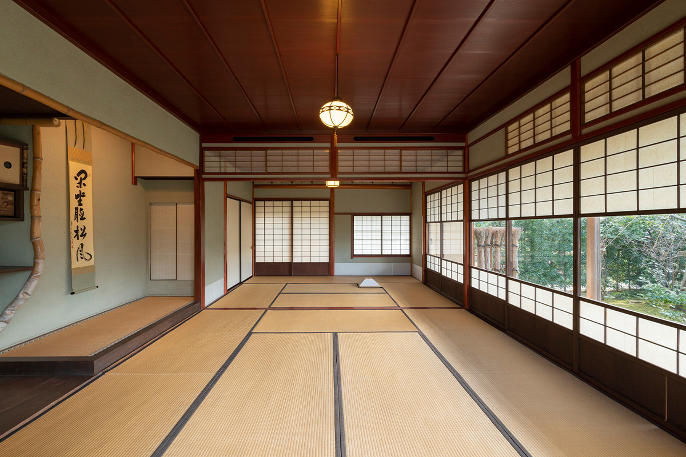
С 6 мая 2027 года до марта 2028 года музей закрывается на большой ремонт: обновят оборудование, кровлю, стеклянные потолки и исправят повреждения от землетрясения на полуострове Ното 2024 года.
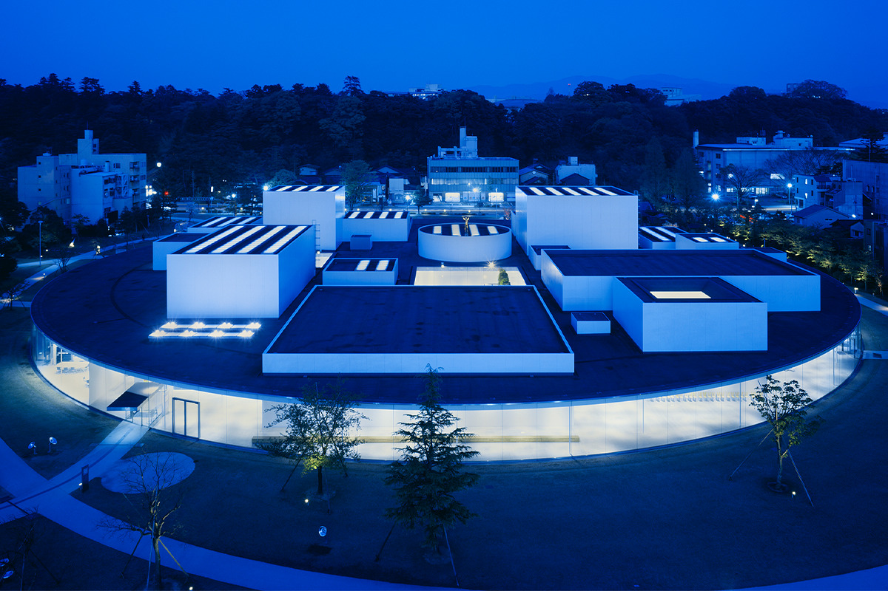
Музей современного искусства XXI века
- Адрес
- префектура Исикава, Канадзава, Хиросака, 1-2-1
- Телефон
- +81 76-220-2800
- Часы работы
- зона выставок 10:00–18:00 (пятница и суббота до 20:00), общественная зона 9:00–22:00
- Выходные
- зона выставок по понедельникам (если праздник, то в ближайший будний день после него), новогодние праздники; общественная зона только новогодние праздники; с 6 мая 2027 года до марта 2028 года музей закрыт на ремонт
- Цены / Вход
- общественная зона бесплатно, на выставки нужен билет
- Сайт
- kanazawa21.jp
Ресторан Fusion21
- Часы работы
- 10:00–20:00
- Выходные
- понедельник (если праздник, то ближайший будний день после него), новогодние праздники
Чайные домики Сёто-ан и Сан'у-тэй
- Часы работы
- 9:00–17:00, во время чайных церемоний осмотр закрыт
- Выходные
- понедельник (если праздник, то ближайший будний день после него), новогодние праздники
- Цены / Вход
- бесплатно
Ремёсла
Национальный музей ремёсел: из Токио в Канадзаву
Единственный в Японии государственный музей, посвящённый только ремёслам, долго был отделением Национального музея современного искусства в Токио. В рамках государственной программы поддержки регионов он переехал в Канадзаву и открылся 25 октября 2020 года.
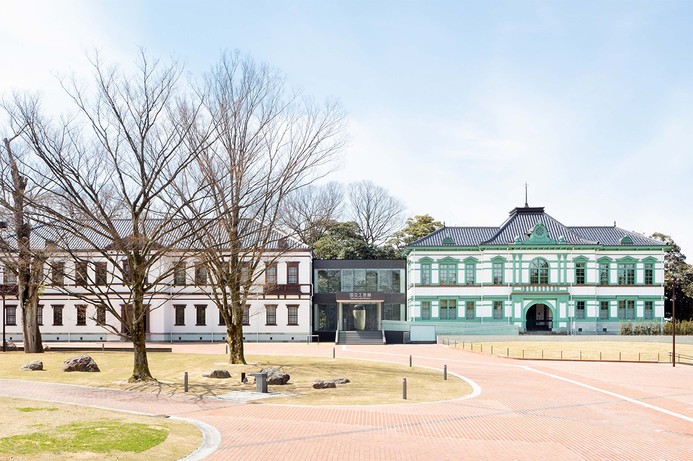
Сюда перевезли около 1900 работ, без которых не рассказать историю японского ремесла, и среди них около 1400 вещей живых национальных сокровищ и членов Японской академии искусств. Их показывают в трёх больших выставочных пространствах.
Для музея перенесли и отреставрировали два армейских здания эпохи Мэйдзи: бывший штаб Девятой дивизии и бывший офицерский клуб «Кайкося». Утраченные части и цвет фасадов восстановили, а внутри устроили современные залы.
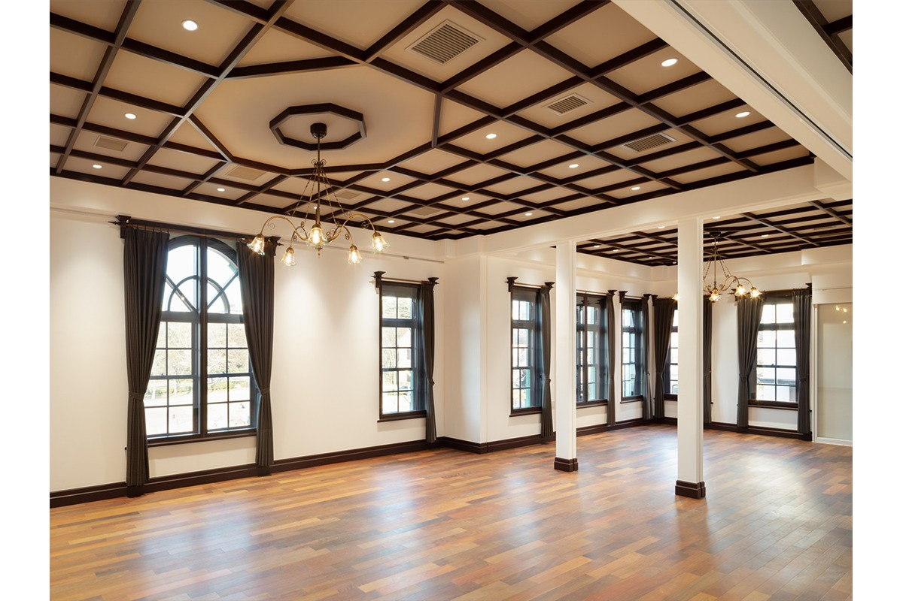
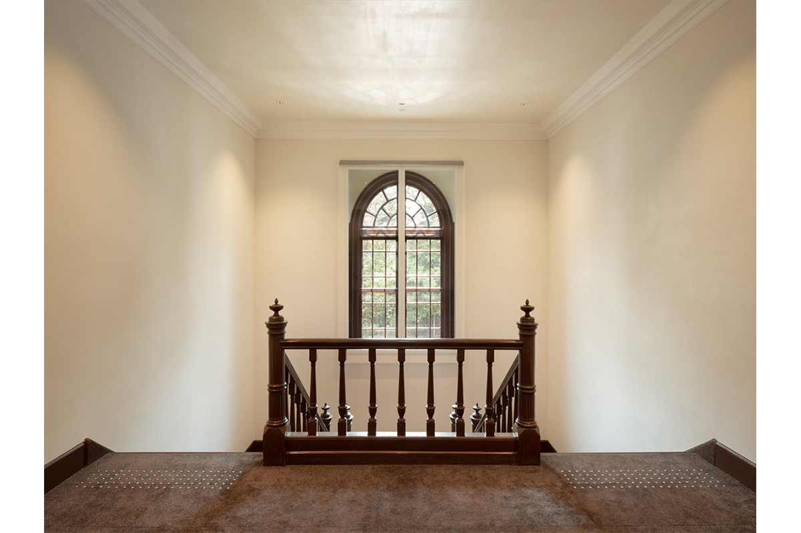
В трёх залах на первом и втором этажах выставки меняют по сезонам. На первом этаже есть раздел для тех, кто впервые знакомится с ремеслом, с интерактивными 3D-изображениями, магазин с каталогами и книгами и библиотека по ремеслу и дизайну.
На втором этаже перенесли и восстановили мастерскую Гонроку Мацуды с его инструментами, документами и фильмами. Ещё одна комната показывает эскизы и рисунки, из которых потом рождаются работы.
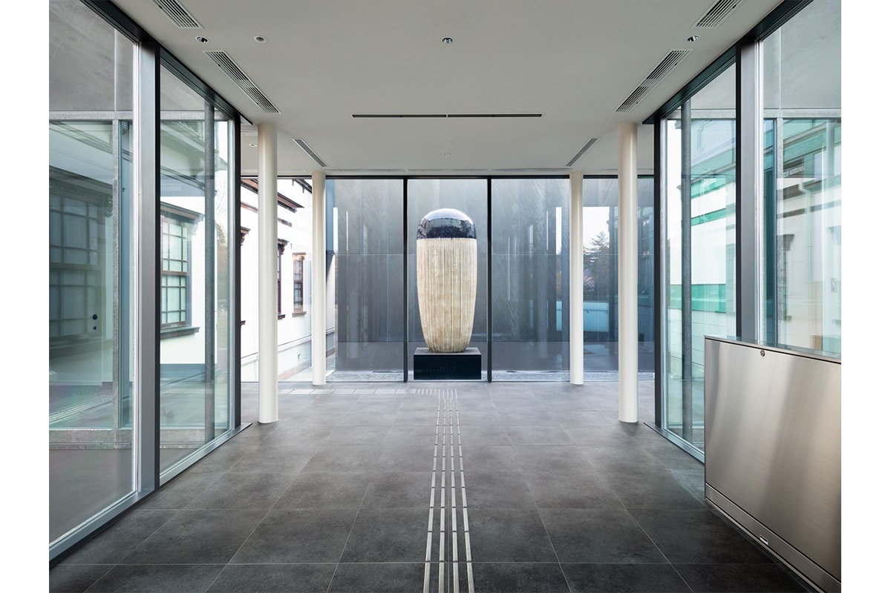
Национальный музей ремёсел
- Адрес
- префектура Исикава, Канадзава, Дэватё, 3-2
- Телефон
- +81 50-5541-8600
- Часы работы
- 9:30–17:30, вход до 17:00
- Выходные
- понедельник (если праздник, то ближайший будний день после него), дни смены экспозиции, новогодние праздники
- Цены / Вход
- зависят от выставки
- Как добраться
- от восточного выхода станции Канадзава автобусом Hokutetsu; общая бесплатная парковка культурных учреждений района на 250 машин
Архитектура
Музей Ёсиро и Ёсио Танигути: отец и сын в одном здании
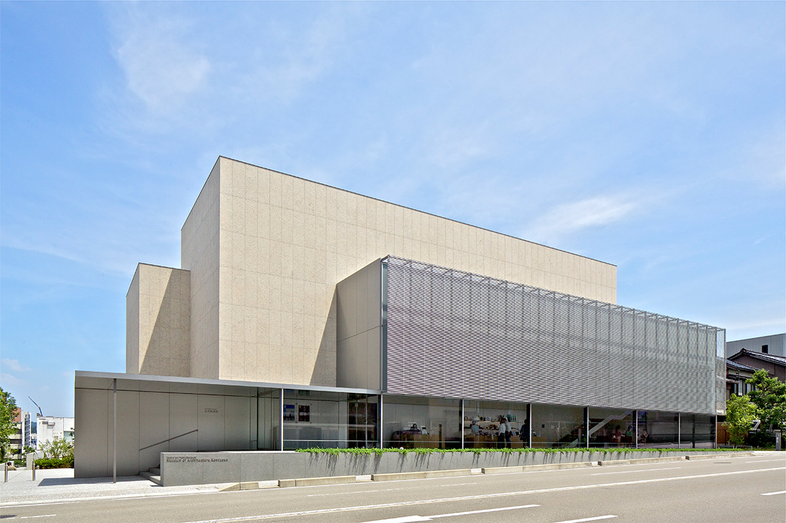
Музей архитектуры Ёсиро и Ёсио Танигути открылся в июле 2019 года по проекту Ёсио Танигути и быстро стал целью поездки для любителей архитектуры со всего мира. Он стоит на главной улице храмового квартала Тэрамати, охраняемого государством как историческая застройка.
В Канадзаве рядом стоят постройки эпохи Эдо, краснокирпичные здания нового времени и современная архитектура, о которой говорят во всём мире. Поэтому именно здесь работает один из немногих в Японии муниципальных музеев архитектуры, и он рассказывает о зодчестве Японии и миру. К тому же Канадзава первой в Японии приняла постановление о городском ландшафте: его утвердили в 1968 году по предложению Ёсиро Танигути.
Музей построен на месте дома, где жил Ёсиро Танигути, архитектор, который помог сохранить облик родного города. Музей чтит отца, давшего Канадзаве направление развития, и сына, подарившего городу новые места вроде Музея Д. Т. Судзуки, и собирает архив их чертежей и документов.
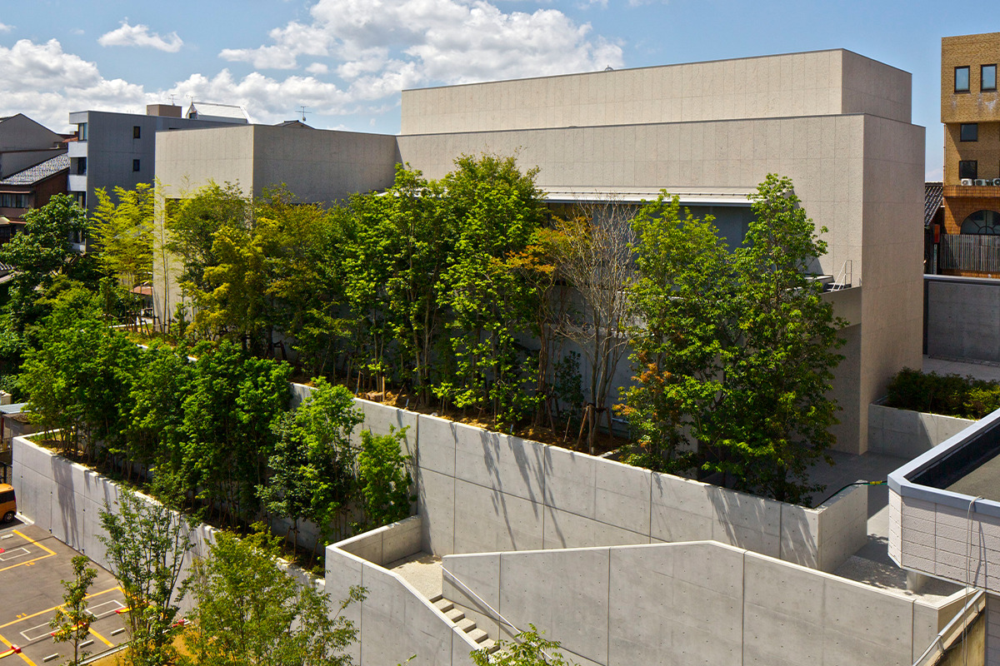
Само здание здесь тоже экспонат. Внутри строгой современной постройки сына воссоздан большой зал и чайная комната Юсинтэй, японского павильона гостевого дворца Акасака, одной из главных работ отца. А пруд перед залом сделан в духе водных садов сына: интерьер отца и внешнее пространство сына встречаются, и такого места больше нигде нет.
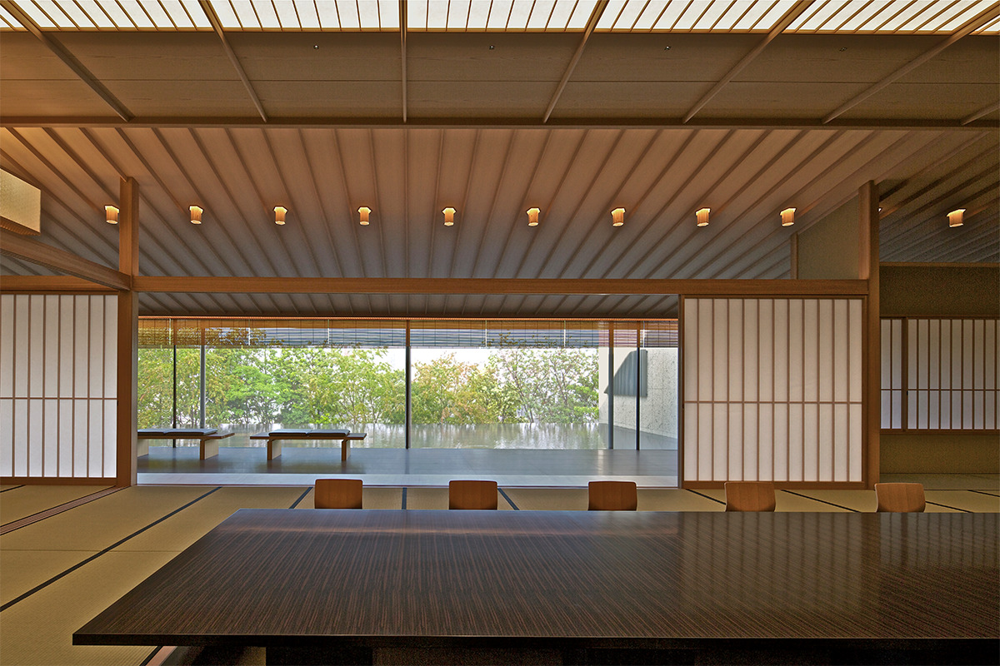
В выставочном зале на цокольном этаже проходят временные выставки об архитектуре и городе, а с ними лекции и мастер-классы: можно узнать кое-что о том, как планируют города.
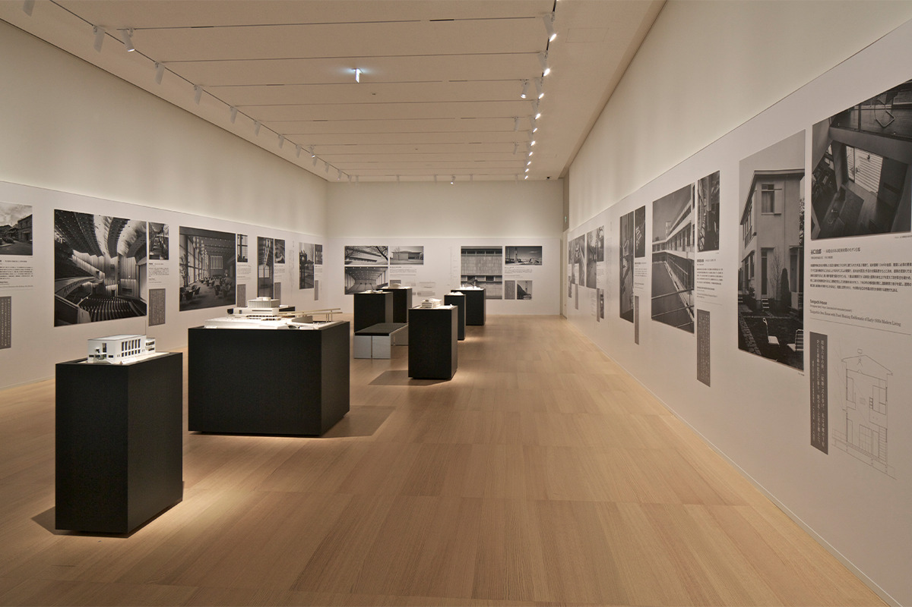
Сразу у входа лаунж высотой в два этажа, с магазином и кафе. Большие окна выходят на улицу Тэрамати и её старую застройку. Простой интерьер из бетона без отделки и пространство, которое успокаивает, напоминают о Музее Д. Т. Судзуки того же архитектора. Кафе в 2022 году было закрыто.
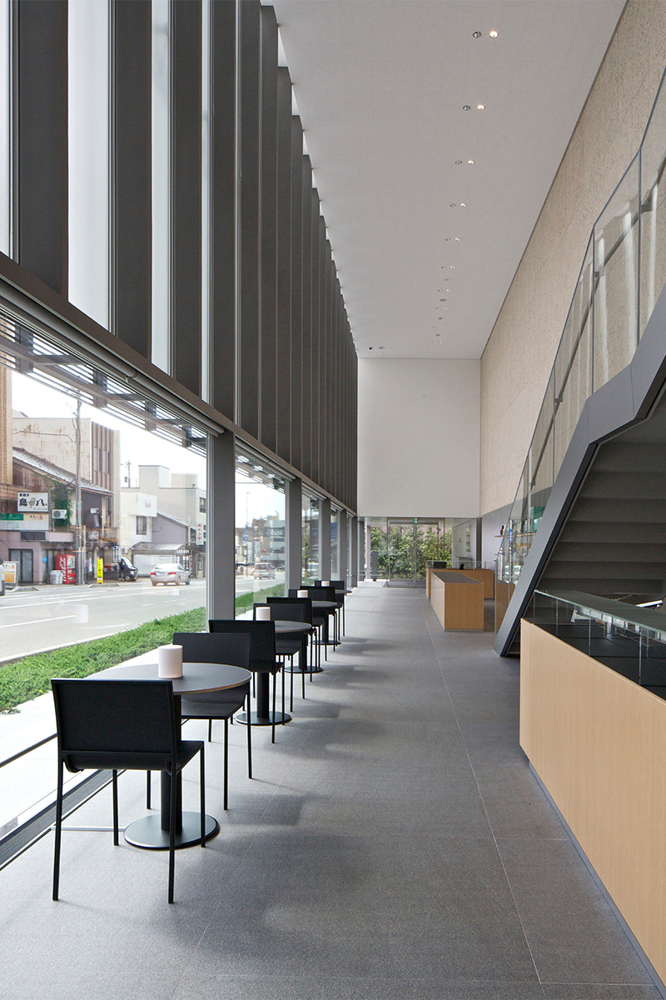
На втором этаже, в постоянной экспозиции, воссоздан Юсинтэй. Это главное, ради чего сюда едут: чтобы повторить зал, сотрудники много раз ездили в Акасаку и обмеряли оригинал. В настоящем Юсинтэй в 1986 году во время Токийского саммита проходил рабочий обед.
Когда открываются полупрозрачные белые двери, справа оказывается зал, а слева водный сад по образцу пруда Юсинтэй. Перед ним стоит скамья, и на ней хорошо просто посидеть.
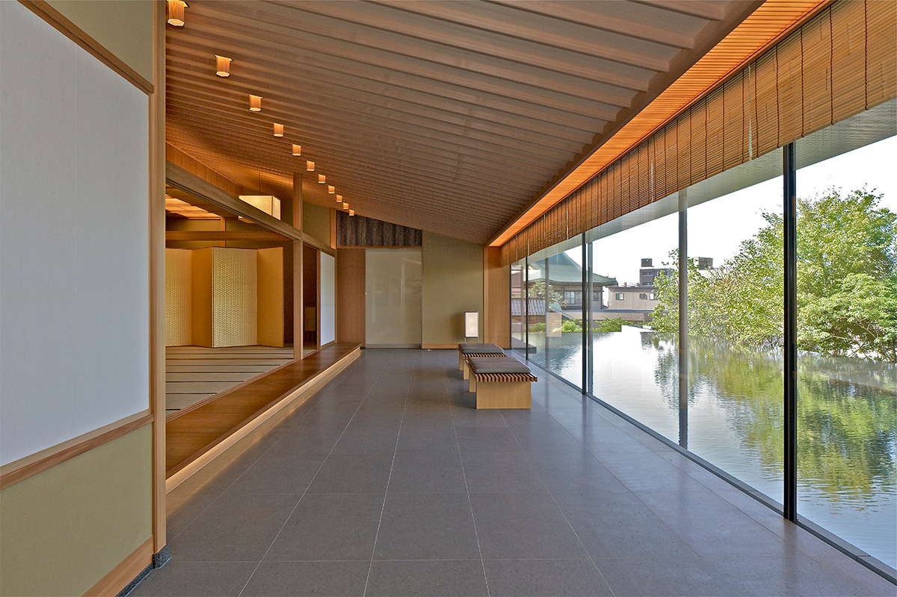
За залом воссоздана чайная комната, а после осмотра можно спуститься в лаунж на первом этаже, к магазину.
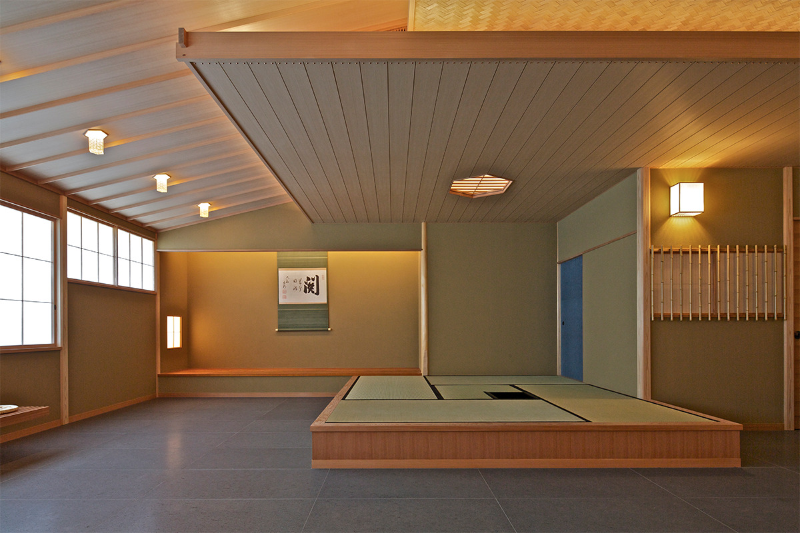
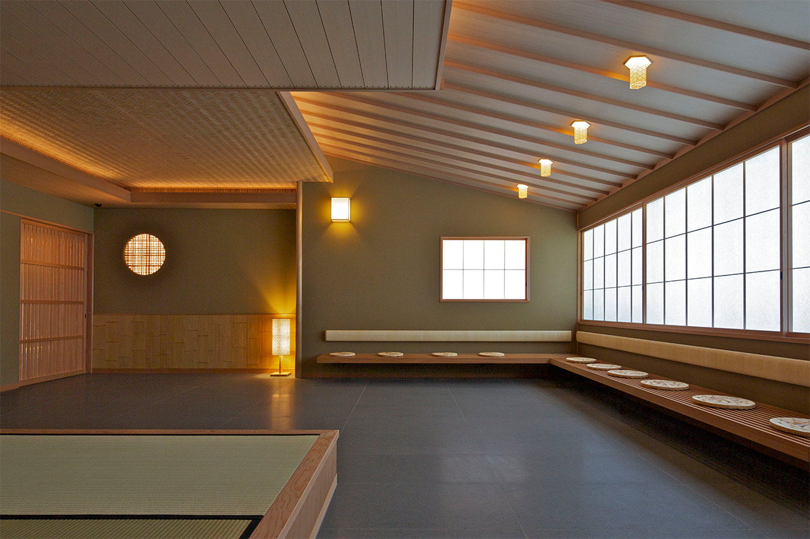
У музея есть и бесплатная часть снаружи: дорожка, которая связывает улицу Тэрамати с берегом Сайгавы. В ясный день по берегу приятно прогуляться.
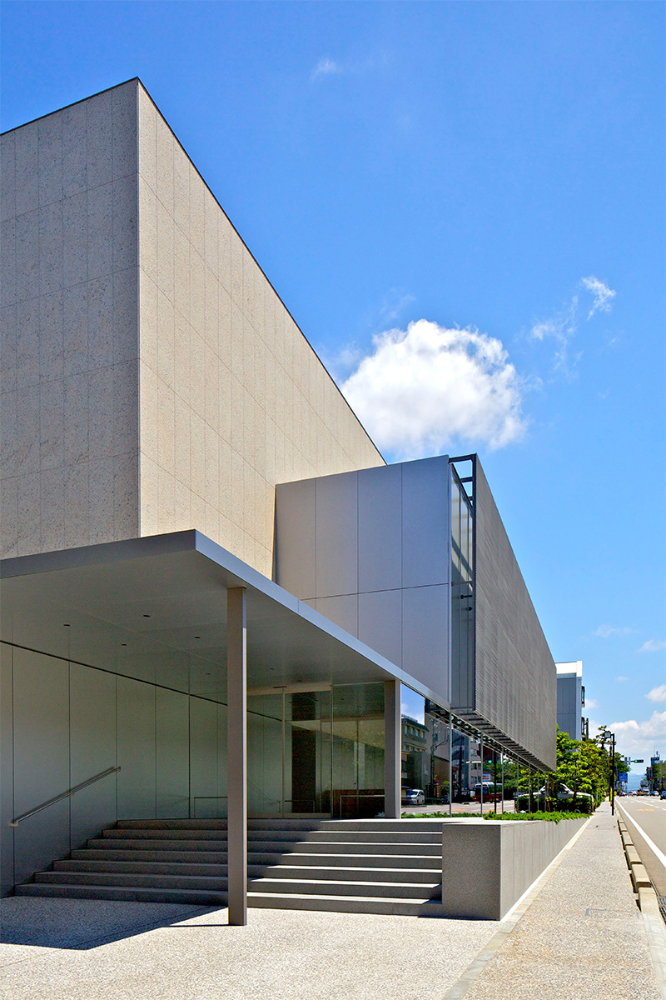
Музей архитектуры Ёсиро и Ёсио Танигути
- Адрес
- префектура Исикава, Канадзава, Тэрамати, 5-1-18
- Телефон
- +81 76-247-3031
- Часы работы
- 9:30–17:00, вход до 16:30
- Выходные
- понедельник (если праздник, то ближайший будний день после него), с 29 декабря по 3 января
- Цены / Вход
- 310 иен, группы от 20 человек 260 иен, от 65 лет 210 иен, до старшей школы бесплатно; временные выставки оплачиваются отдельно
Дзэн
Музей Д. Т. Судзуки: здание для размышлений
Дайсэцу Судзуки родился в Канадзаве, и город построил музей его памяти недалеко от места, где он появился на свет. Проект сделал Ёсио Танигути: он использовал склон, обычный для Канадзавы, и повторил приём, найденный для Галереи сокровищ Хорю-дзи в Токио, где здание видно через воду. Музей держится на трёх идеях, размышлении, отдыхе и беседе, и состоит из трёх частей: выставочной, учебной и пространства для размышлений.
Осмотр начинается с выставочного пространства в конце длинного прямого внутреннего коридора. На широких белых стенах висят несколько работ каллиграфии Судзуки и фотографии, и подписей к ним, как в обычном музее, нет. В учебном пространстве лежит часть его книг, а написал он больше ста. Их можно взять и читать, глядя в окно на сад.
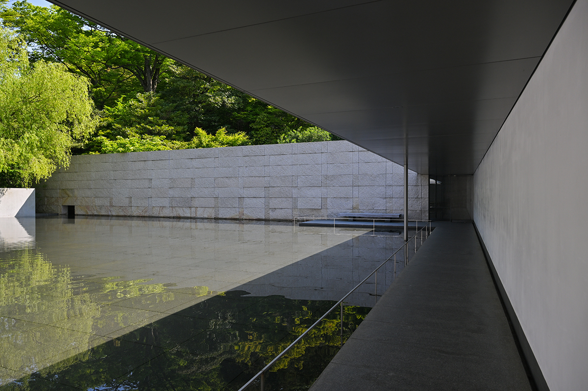
После учёбы залитый солнцем внешний коридор ведёт к пространству для размышлений. Через сад «Водное зеркало» видно белое оштукатуренное здание с проёмами на все четыре стороны. Внутри оно квадратное, как настоятельские покои в буддийском храме. Из каждого проёма открывается свой вид, а за каменной стеной поднимается зелень леса Хонда, где была загородная усадьба знатного рода княжества Кага. По воде время от времени с тихим звуком расходятся круги, и время, проведённое за этим зрелищем, у каждого становится своим размышлением.
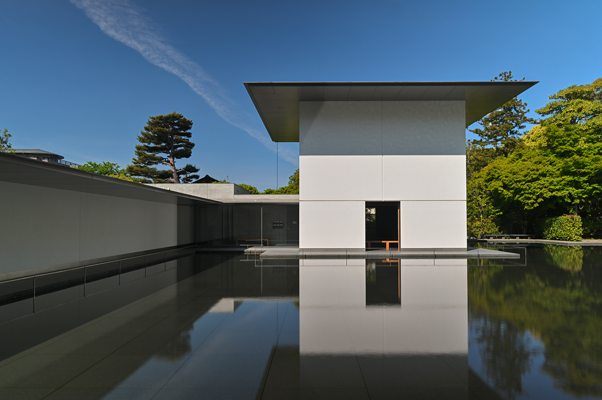
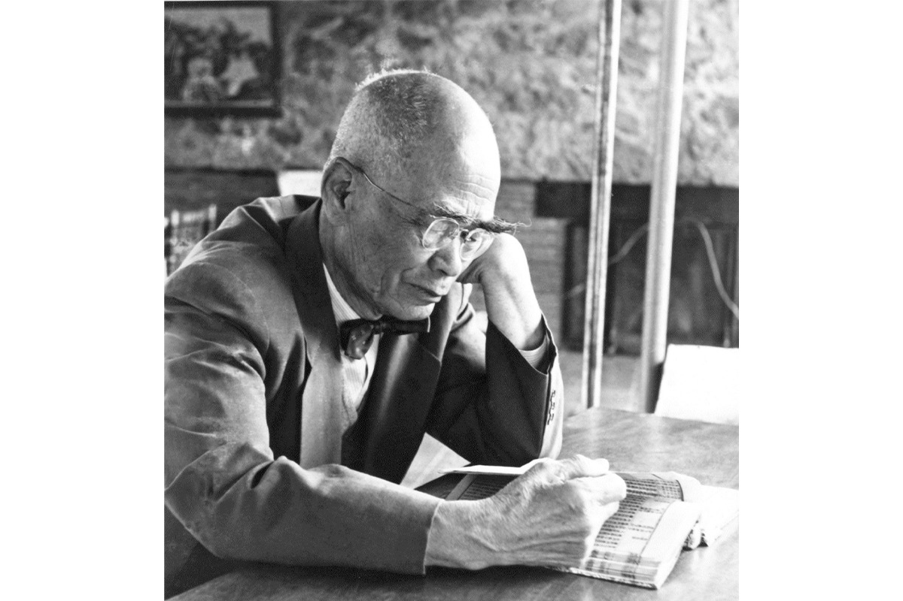
Музей Д. Т. Судзуки
- Адрес
- префектура Исикава, Канадзава, Хондамати, 3-4-20
- Телефон
- +81 76-221-8011
- Часы работы
- 9:30–17:00, вход до 16:30
- Выходные
- понедельник (если праздник, то ближайший будний день после него)
- Цены / Вход
- взрослые 310 иен
Фото: Осаму Ватанабэ, Коси Исикава, Хираку Икэда, Ацуси Накамити, Такуми Ота, Тосихару Китадзима, Такаси Гоми.